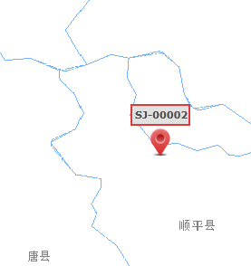

Ver la ubicación de alarma
Localice la ubicación de la alarma del vehículo, que se muestra en el mapa GIS.
Seleccione la alarma en la lista de alarmas de la interfaz principal de la alarma del vehículo y haga clic en el botón 〖 〗 para localizar y mostrar la ubicación de la alarma del vehículo en el mapa GIS.
〗 para localizar y mostrar la ubicación de la alarma del vehículo en el mapa GIS.

Fig 41 Visualización de la posición de alarma
El sistema muestra la información detallada del vehículo de alarma en la ventana del área de información, incluida la latitud
y longitud de la posición de la alarma, la velocidad de desplazamiento, la dirección, etc.